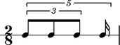
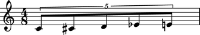

_FDTupletDurationInterface class
The Abjad _FDTupletDurationInterface class manages the duration attributes of fixed-duration tuplets.
Attributes
_duration — reimplement
augmentation
contents
diminution
multiplier
prolated
prolation
prolations
Methods
trim( )
abjad> tuplet = FixedDurationTuplet((2, 8), Note(0, (1, 8)) * 3) abjad> Beam(tuplet) abjad> outer = FixedDurationTuplet((2, 8), [tuplet, Note(0, (1, 16))]) abjad> measure = Measure((2, 8), [outer]) abjad> staff = RhythmicStaff([measure]) abjad> show(staff)
augmentation
abjad> tuplet.duration.augmentation False
contents
abjad> tuplet.duration.contents Rational(3, 8)
diminution
abjad> tuplet.duration.diminution True
multiplier
abjad> tuplet.duration.multiplier Rational(2, 3)
prolated
abjad> tuplet.duration.prolated Rational(1, 5)
prolation
abjad> tuplet.duration.prolation Rational(4, 5)
prolations abjd> tuplet.duration.prolations [Rational(4, 5)]
trim( )
abjad> notes = [Note(n, (1, 8)) for n in range(5)] abjad> tuplet = FixedDurationTuplet((4, 8), notes) abjad> Beam(tuplet) abjad> measure = Measure((4, 8), [tuplet]) abjad> show(measure)
abjad> notes = [Note(n, (1, 8)) for n in range(5)] abjad> tuplet = FixedDurationTuplet((4, 8), notes) abjad> Beam(tuplet) abjad> measure = Measure((4, 8), [tuplet]) abjad> tuplet.trim(0) abjad> show(measure)
See the _FdTupletDurationInterface class in tuplet/fd/duration.py for implementation details.
Reimplement implicit _duration as explicit target.